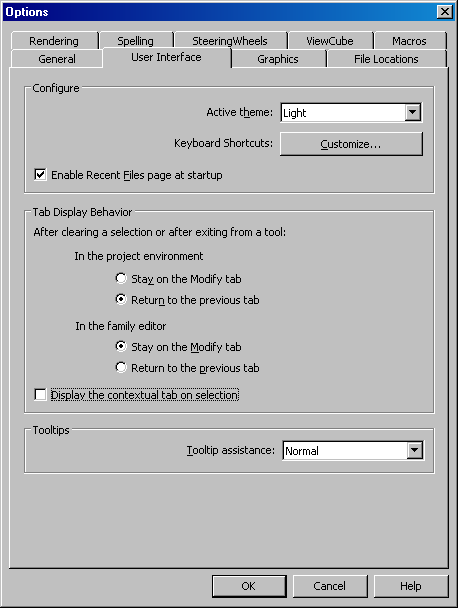

Ribon Tab Context Toggle
I'll be going to Munich next week to give my second Revit 2011 API training, and the first one using our completely revamped training material. I am very much looking forward to that.
While giving Revit API trainings, we often learn something from the attendees, too. Here is a little tip brought up recently by such an attendee for those of us who are mainly interested in debugging our add-ins in Revit, and therefore happy to remain in the Add-In tab at most times.
You can disable the automatic tab switch that Revit performs by default on selection of an element by toggling the corresponding check box in Options > User Interface:

So let's see what other new things I learn in Munich...